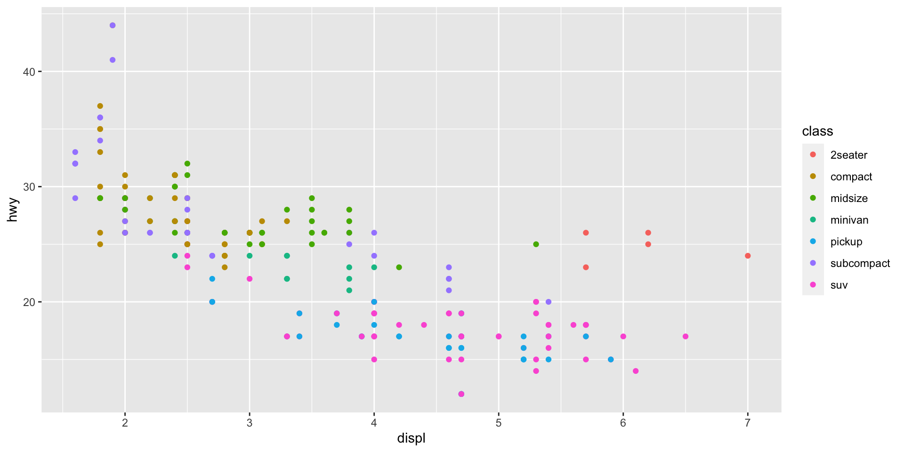
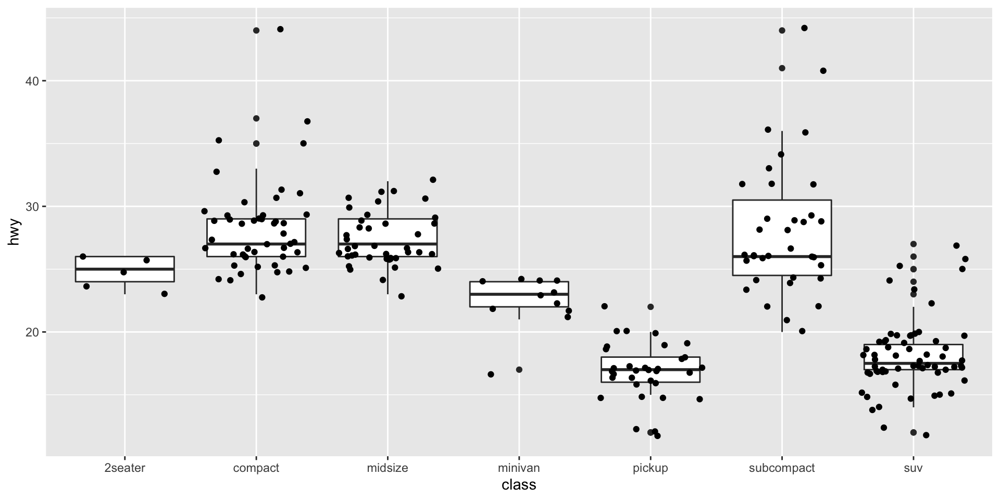

# A tibble: 6 × 11
manufacturer model displ year cyl trans drv cty hwy fl class
<chr> <chr> <dbl> <int> <int> <chr> <chr> <int> <int> <chr> <chr>
1 audi a4 1.8 1999 4 auto(l5) f 18 29 p compa…
2 audi a4 1.8 1999 4 manual(m5) f 21 29 p compa…
3 audi a4 2 2008 4 manual(m6) f 20 31 p compa…
4 audi a4 2 2008 4 auto(av) f 21 30 p compa…
5 audi a4 2.8 1999 6 auto(l5) f 16 26 p compa…
6 audi a4 2.8 1999 6 manual(m5) f 18 26 p compa…CanvasXpress Demo with Reveal JS
Isaac Neuhaus
CanvasXpress in Reveal JS
This demo shows the ability to easily integrate CanvasXpress with ggplot in R and create a presentation in Reveal JS
Scatter2d Plot
- Data: mpg dataset
- Plot with ggplot
- Plot with CanvasXpress
Data: mpg dataset
This dataset contains a subset of the fuel economy data that the EPA makes available on https://fueleconomy.gov/. It contains only models which had a new release every year between 1999 and 2008 - this was used as a proxy for the popularity of the car.
Plot Scatter2D with ggplot
Compare displacement (displ) vs highway efficiency (hwy) and color the data by vehicle class (class). Store the ggplot object in a variable.

Plot Scatter 2D with CanvasXpress
Use the ggplot object stored in the variable ‘s’ and plot with CanvasXpress
You may want to make this page somehow BIG for this demo!
Tooltips – Mouseover data points
Toolbar – Mouseover top of the plot
Funnel & Tools
Boxplot
- Plot with ggplot
- Plot with CanvasXpress
Plot Boxplot with ggplot
Look at the distribution of the highway millage (hwy) in each of the vehicle classes (class)

Plot Boxplot with CanvasXpress
Use the ggplot object stored in the variable ‘b’ and plot with CanvasXpress
Demo
Broadcast – Go to the Scatter 2D plot above
Press ‘Shift’ and drag the mouse to select points in the vissualization (they should turn red)
Go to the Boxplot visualization below and check out the selected data points!
This is something cool!
Double-Click on the image